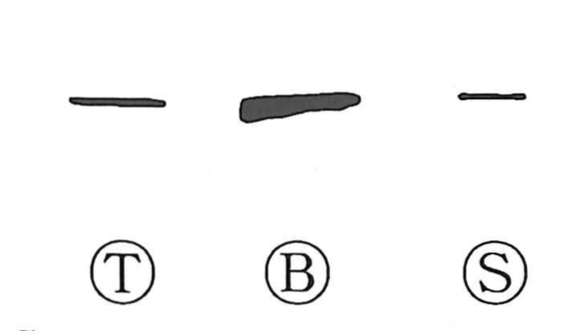

一

Kun: hitotsu, hito | On: ichi, itsu
one ・ single ・ first ・ all ・ whole
Explanation
一 is an indicative sign: a horizontal stroke marking the number one in the counting-rod system. Oracle-bone and bronze numerals repeat horizontal strokes for the first few numbers, while a vertical stroke marks ten. The form works as a numerical sign without depicting an object beyond the counting mark itself.
As the starting point of counting, 一 also means ‘beginning.’ As the smallest positive count, it can indicate a small amount. Gathering several things into one gives the further senses ‘all,’ ‘the whole,’ and ‘exclusively.’
The undivided one also gives an image of original unity. Applied to the world as a whole, it can name the beginning from which multiplicity unfolds.